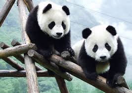

July 10 2021
This Is My First Article
The panda, with its distinctive black and white coat, is adored by the world and considered a national treasure in China. This bear also has a special significance for WWF because it has been our logo since our founding in 1961.
Pandas live mainly in temperate forests high in the mountains of southwest China, where they subsist almost entirely on bamboo. They must eat around 26 to 84 pounds of it every day, depending on what part of the bamboo they are eating. They use their enlarged wrist bones that function as opposable thumbs.
A newborn panda is about the size of a stick of butter—about 1/900th the size of its mother—but females can grow up to about 200 pounds, while males can grow up to about 300 pounds as adults. These bears are excellent tree climbers despite their bulk.
Today, WWF protects wild pandas by preventing habitat loss caused by human development and encroachment, the most serious threat to their long-term survival. For years, led by WWF-China and now with new partners including Disneynature, we’ve worked to preserve and link important panda corridors across China, spanning more than 34 million acres, three provinces, and two of the country’s largest river basins. In the process, we’ve protected critical habitat for other species too: snub-nosed monkeys, takins, and snow leopards among them.
The efforts are yielding success: Wild panda numbers are finally rebounding after years of decline. In September, the International Union for Conservation of Nature (IUCN) announced that pandas have been upgraded from “endangered” to “vulnerable” on the global list of species at risk of extinction, following a population growth of nearly 17% over the past decade. Yet while this recent status change for pandas is encouraging, they’re not out of the woods yet. Says Lo Sze Ping, CEO of WWF-China, “Everyone should celebrate this achievement. But pandas remain scattered and vulnerable, and much of their habitat is threatened by poorly planned infrastructure projects. Remember, there are still only 1,864 left in the wild.”
Read more